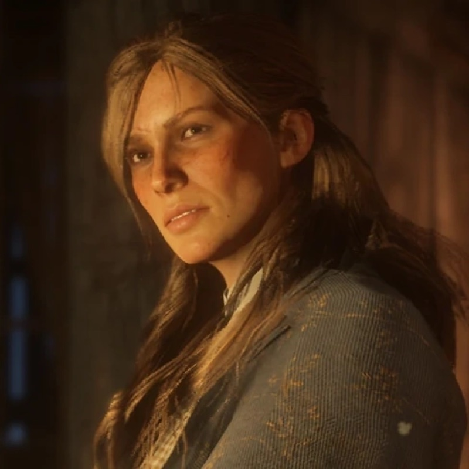
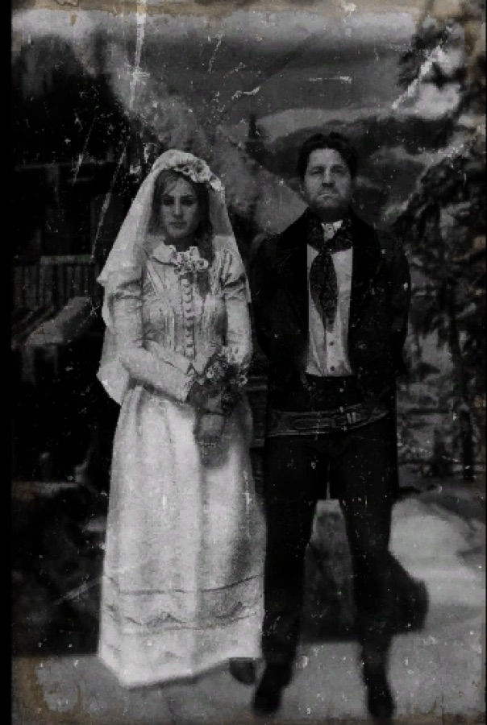
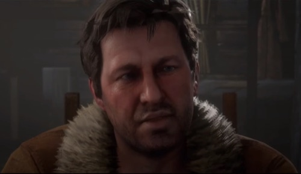
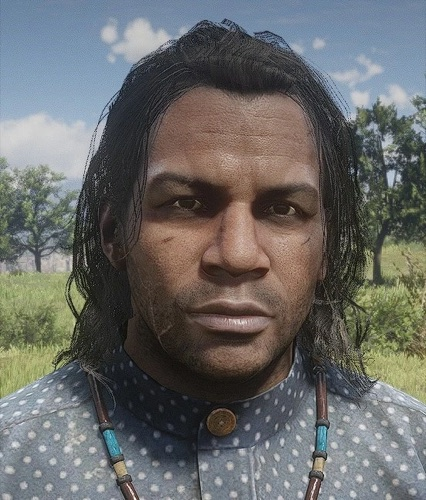
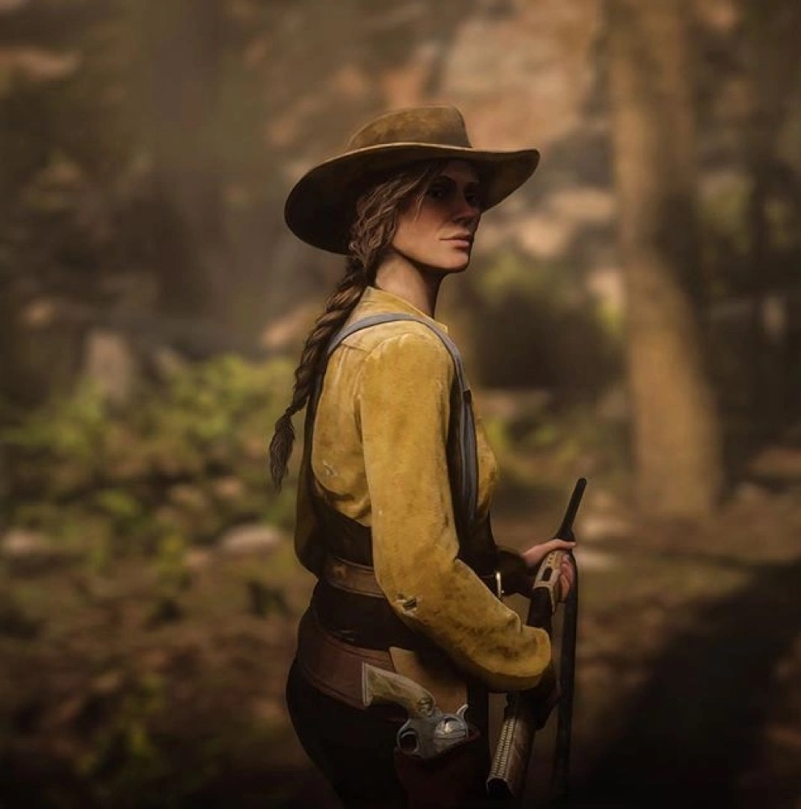

Character · Van der Linde gang
Sadie Adler
Sadie Adler is one of the most beloved characters in Red Dead Redemption 2: a homesteader's wife whose life is shattered by the O'Driscoll Boys, and who turns her grief into one of the fiercest figures in the Van der Linde gang. Taken in by the outlaws after losing everything, she fights her way from broken widow to fearless gunslinger.
By the game's epilogue she has become a full-fledged bounty hunter, riding alongside John Marston and outliving the gang that gave her a second family. She was voiced by Alex McKenna.
- Status
- Alive (last known)
- Nationality
- American
- Affiliation
- Van der Linde gang; bounty hunter
- Role
- Gang member turned bounty hunter
- Late husband
- Jake Adler
- Games
- Red Dead Redemption 2, Red Dead Online
- Voiced by
- Alex McKenna
Biography
A homesteader's wife
Sadie married Jake Adler in 1896 and built a quiet life with him on a homestead in the Grizzlies, in the cold mountains of Ambarino. That life ends in 1899 when the O'Driscoll Boys raid their home and murder Jake. Sadie survives only by hiding, and is found, traumatised and alone, by the Van der Linde gang.

Forged by grief
The gang takes Sadie in at their camp, where she is first paralysed by loss. But grief hardens into resolve, and she insists on pulling her own weight, refusing to be treated as a victim. She grows close to Arthur Morgan, who becomes a steadfast partner in her hunt for vengeance against the O'Driscolls.
One of the gang's deadliest
By the time the gang reaches its end, Sadie has become one of its most capable and ferocious members, fearless in a fight and utterly loyal to the few she trusts. Where others break under the collapse, she only grows sharper.
Personality
Sadie is blunt, fearless and fiercely independent, with a dark humour that masks deep grief. She refuses pity and answers loss with action, channelling her pain into a relentless drive to hunt down those who wronged her.
For all her hardness, she is intensely loyal. The people who treat her as an equal, Arthur and later John, earn a friend who will ride into any danger at their side.
Relationships

Jake Adler
Sadie's husband, murdered by the O'Driscolls. His death is the wound that drives everything she becomes.

Arthur Morgan
Her closest friend in the gang and her partner in vengeance. The two share an easy, hard-won trust forged in violence and grief.

John Marston
A fellow survivor she stands beside in the epilogue, helping him build a new life and settle old scores.

Abigail Marston
John's wife and one of the women Sadie grows close to among the gang's survivors.

Charles Smith
A steady, principled ally from the gang who joins her and John for the final hunt against Micah.

Micah Bell
The traitor she despises. Sadie is at the forefront of the 1907 hunt that finally ends him at Mount Hagen.
Fate and bounty hunting
Unlike most of the gang, Sadie survives. In the epilogue, set years later, she has reinvented herself as a professional bounty hunter, hard, capable and entirely her own woman. She seeks out John Marston and pulls him back into action when there is dangerous work to be done.
She rides with John and Charles Smith on the 1907 hunt for Micah Bell, taking a wound but living to see the traitor dead. With old scores settled, Sadie rides off to start a life of her own, musing about heading to South America, one of the rare members of the Van der Linde gang to choose her own future.

Behind the scenes
Sadie was performed by Alex McKenna through voice and motion capture. Her arc, from devastated widow to one of the gang's deadliest members, made her a standout in a game full of memorable characters, and a fan favourite from launch.
Sadie is frequently cited as proof of Red Dead Redemption 2's strength with supporting characters: a woman written with grit and depth rather than as a sidekick.
Reception and legacy
Sadie Adler is regularly named among the best characters in Red Dead Redemption 2, praised for her toughness, her humour and the way her grief never feels like an excuse but a forge.
Many fans hope to see her return in some form in a future Red Dead entry, and she has become a popular example of how the series writes strong, fully realised women.
Trivia
- Sadie is one of the few major members of the Van der Linde gang to survive the events of the story.
- She married Jake Adler in 1896, three years before the O'Driscolls destroyed their home.
- In the epilogue she works as a bounty hunter, a role players can ride alongside her in.
- She appears in Red Dead Redemption 2 and as a stranger in Red Dead Online.